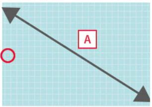
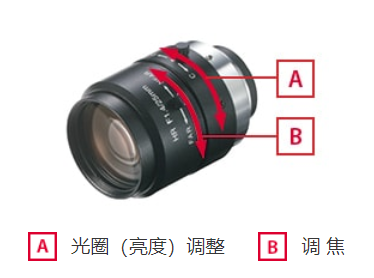
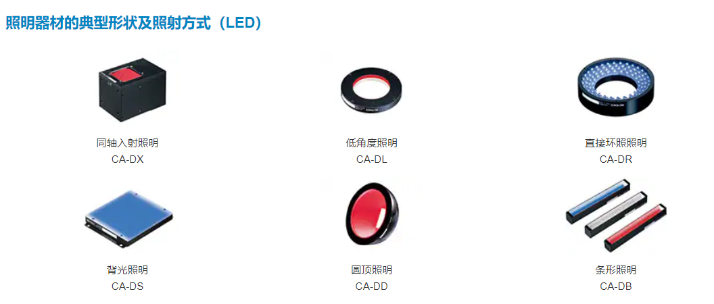

相机相关硬件知识
相机相关硬件知识
1.图像传感器
在使用相机的时候，首先我们要获取图像，这个过程本质上就是将**图像(光信号)转为数字信号(电信号)**，类似于之前循迹小车使用的灰度传感器。
常见的图像传感器有：CCD和CMOS传感器
这些传感器可以看成是一个由若干光敏元件组成的一个阵列，其中每个光敏元件对应一个像素

所谓100万像素的相机，其实就是指它的图像传感器有100万个光敏元件，也就是获得的图像的分辨率为100万
1.1像元尺寸
- 定义：每个光敏元件的尺寸
在知道图像的分辨率（也就是像元个数）和像元尺寸后，就可以通过这2者的乘积计算出图像传感器的尺寸了
1.2摄像头(图像传感器)的精度
摄像头的精度指的就是图像传感器（CMOS/CCD）的精度，单位是**(pix/mm)**，即一个光敏传感器(像素)对应世界坐标系下的长度
工业中常有检测指标
xxx (mm)，指的就是要能够检测到xxx (mm)小的物体。那么数值上，所使用的图像传感器的精度应该得小于xxx (mm)
2.镜头
照相机的镜头由多个镜片，光圈，调焦装置构成，但也有的镜头无法调整光圈和焦距
在选择镜头时，通常从以下2个角度出发
2.1如何根据视野大小选择镜头
焦距是镜头的规格参数之一，FA 镜头的焦距一般是 8 mm、16 mm、25 mm 或 50 mm
根据拍摄时所需要的视野及焦距，可以计算出焦点对准的位置（WD，即工作距离）
WD : 视野 = 焦距 : CCD 尺寸
例1 ：镜头焦距 16mm、CCD 尺寸 3.6mm 时，为了得到 45mm 的视野，WD 应为 200mm
2.2如何获得对焦良好的画面
景深的定义：相机的景深是指在摄影中，被摄物体前后的清晰范围。换句话说，景深决定了图片中清晰和模糊的部分。一个有较大景深的照片会使得前景、中景和背景都保持清晰，而一个有较小景深的照片则会使得只有特定的焦点范围内的物体保持清晰，其他位置则会呈现模糊效果。
为了得到对角良好的画面，增大相机的景深就行了，有一下几种途径：
- 镜头焦距越小，景深越大。
- 与拍摄对象距离越远，景深越大。注意: 使用连接环或微距镜头时，景深会变小。
- 光圈越小，景深越大。对于同一只镜头而言，光圈越小，亮度越大，越容易聚焦。
3.照明
选择照明光源的步骤：
- 1.决定镜面反射、漫反射、透射
- 2.决定光源形状（制式）和尺寸
- 3.决定光源颜色（波长）
3.1照明器材的种类
照明工具也算是机器视觉中必不可少的一部分，通常使用以下这些照明器材：
3.2照明方式的分类
根据检测物体的特点以及目的，照明方式可以分为以下几类：
- 镜面反射型：镜头接收的光线是来自拍摄对象的镜面反射光线
- 漫反射型：避开来自拍摄对象的镜面反射光，而接收整体、均一的光线
- 投射型：接收来自拍摄对象背景的光线。是一种检测轮廓的照明方式
在选择了镜面反射、漫反射或透射等照明方式后，根据检查目的、背景、周围环境等确定照明类型。
一般说来，镜面反射可选择同轴入射照明、环形照明或条型照明，漫反射可选择低角度照明、环形照明或条型照明，透射可选择面照明或条型照明。其中环形照明及条型照明的设置距离更加灵活，因此应用范围更广。